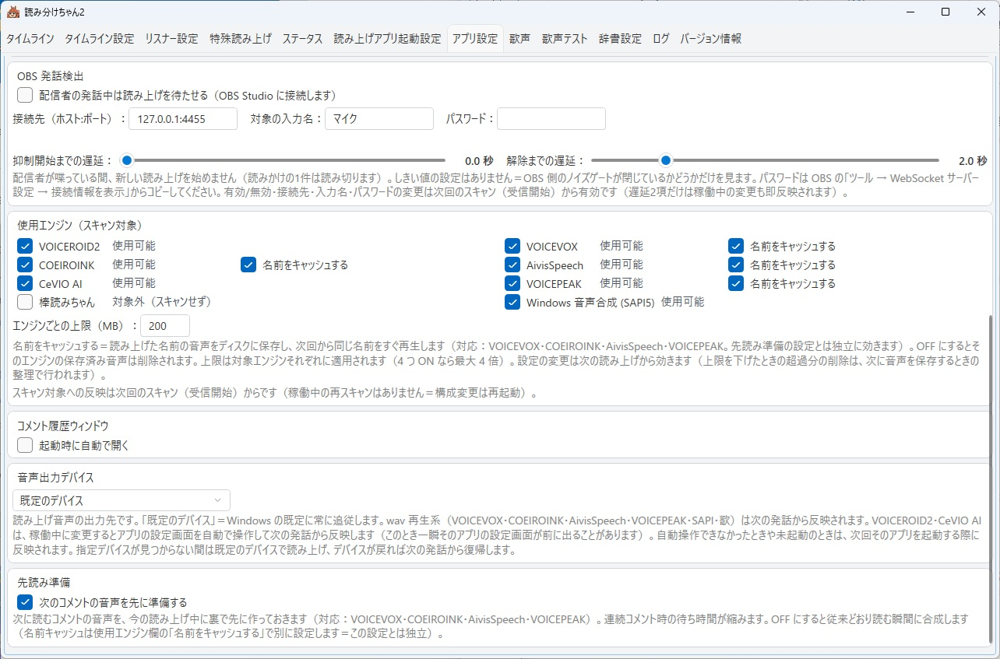
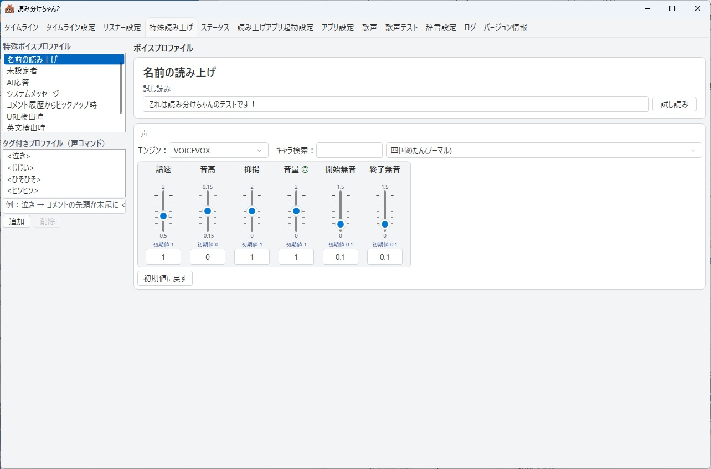
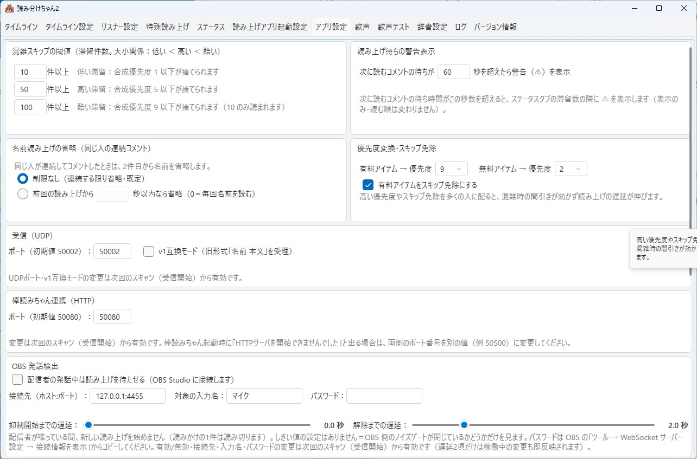
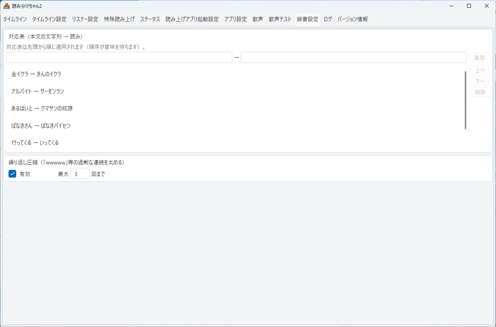

読み分けちゃん2
いつものリスナーに、いつもの声を。
ツイキャス・YouTube に届いたコメントを、リスナーごとに違う声で読み上げる Windows 用の無料ソフトです。
![稼働中のタイムラインタブ（v2.13）。上部の帯に [一括起動して受信開始]・[受信開始]・[再スキャン]、4 段目に「字幕」チェック、3 段目にツイキャスと YouTube の配信プラットフォーム情報。中央のレーンにコメントが流れ、緑の枠にいま読んでいるコメントが乗っている](screenshots/webinstruct/v213screenshots/timeline.png)

稼働中のタイムライン画面（v2.13）と、リスナーごとの設定画面（クリックで拡大。右の画像は v2.10 時点＝v2.13 では左上に [名前読み上げ設定]・[未登録者読み上げ設定] が並び、AI の許可✓が「AI(低)許可」「AI(高)許可」の 2 個になっています）
読み分けちゃん2 とは
配信に届いたコメントを、リスナーごとに違う声で読み分けて読み上げるツールです。 ツイキャス・YouTube のコメント取得に対応し、VOICEVOX（無料）などの音声合成エンジンと 連携して動きます。
いちばんの持ち味は、リスナーごとの声を、配信の個性にできること。 常連さんにはいつもの声、初めての方にはその日の声。声の使い分けがそのまま「その配信らしさ」になります。 配信中の扱いやすさ——混み合ったときの選別、読みたい 1 件だけを拾う操作、変えた設定が次のコメントから効くこと——も、 実際の配信で使いながら整えてきました。
前身の「読み分けちゃん」（v1）を 4 年間、実際の配信で使い込み、 リスナーさんの提案を取り込みながら全面的に作り直したのがこの v2 です （開発の背景）。
2026-09-14、v2.16 を公開しました。 配信プラットフォーム情報の行に「テロップ更新」「コメント投稿」のボタンが同じ 1 行の右端に収まりました（v2.15 の内容も含みます）。 「シャウト」機能を拡張——反応条件が増えました（初見・枠初・高額アイテム・○件ごと・久しぶり・累計金額の節目など）。 読み上げ内容で回数や累計を読み上げる置き換えワードも増えました。 タイムラインの配信プラットフォーム情報は 1 行ずつ横いっぱいに並ぶようになり、表示するフィーダーを選べるようになりました （v2.16／v2.15 の更新内容）。 v2.14 以前からのアップデートは上書きインストール、またはアプリ内の「バージョン情報」タブの [更新を確認] で、設定はそのまま引き継がれます。 以前の版の更新内容は v2.14・v2.13 もあわせてご覧ください （新エンジン「irodori-TTS-for-yomiwakechan」・わんコメ連携・AI連携・音声認識・起動の手順の変更など）。
あなたはどちらですか？
ご案内は、2 つに分かれています。
🎙 配信で使ってみたい方へ
すでにツイキャスなどで配信をしている方向け。 インストールから、最初の配信で使うまでの手引きです。
- インストールと初回起動
- 最初にやること（ツイキャス配信者向け）
- ツイキャスのアクセストークンとは
- 配信前の常連さん登録
- OBS 連携（マイク検出）の設定
- わんコメ連携（v2.13 で追加）
- AI連携（v2.13 で追加・ローカル LLM 推奨）
- 音声認識（v2.13 で追加）
- 本体とコメント取得プログラムの更新
- irodori-tts 系の声を使うには
- まだ発展途上の項目
🎵 お歌機能を試してみたい方へ
コメントに音符を書くと、そのとおりに歌います。 本体を手元の PC で動かせば、歌声テストで好きなだけ歌わせて遊べます （VOICEVOX が必要）。
- セットアップ：手元で歌わせるまで
- SONG 記法の基本（ドレミの書き方）
- 音の長さ・テンポ・オクターブなどの表現
- 実際の配信で歌わせるとき（[歌] は付けなくても歌います）
ダウンロード（配信者の方）
下のボタンで配布一覧（GitHub の Releases ページ）が開きます。開いたページの Assets にある yomiwakechan2-setup-v2.16b.exe（末尾が .exe のファイル）を選ぶと、ダウンロードが始まります。
yomiwakechan2-setup-v2.16b.exe（約 68MB）／ Windows 10・11（64bit）
最新版 v2.16b（2026-09-18 公開）／ v2.16 の更新内容／ v2.14／ v2.13 の更新内容
動作環境
- Windows 10 / 11（64bit）
- .NET 10 Desktop Runtime（未導入でもインストーラが自動で導入します）
- 音声合成エンジン：
- VOICEVOX（無料・お勧め） … https://voicevox.hiroshiba.jp/
多彩な声・お歌機能をフルに使うには VOICEVOX の導入をお勧めします（別途インストール・後からでも OK） - COEIROINK / AivisSpeech（いずれも無料）
- 棒読みちゃん（無料）
- irodori-TTS-for-yomiwakechan（v2.13 で追加・GPU 推奨）：感情や演技指示のできる声。
配布ページのインストーラで導入します（CUDA 版／Radeon 版）。
Irodori-TTS-Server（コマンドライン導入）をお使いの方はそのまま使えます
GPU（GeForce RTX シリーズ／Radeon）推奨。CPU でも動作し実配信でも使えますが、実用的ではありません （ガイド 10 章） - VOICEROID2 / CeVIO AI / VOICEPEAK（各製品のライセンスをお持ちの方のみ）
※ VOICEPEAK は配信のために新しく購入することはお勧めしません （1 回しゃべるたびに数秒の待ちが避けられません）。すでにお持ちの方はお使いいただけます。 - 何も入れなくても、Windows 標準の音声（Haruka など）で最低限の読み上げは動きます
- VOICEVOX（無料・お勧め） … https://voicevox.hiroshiba.jp/
インストーラを実行すると「Windows によって PC が保護されました」という青い画面が 表示されます。これは本ソフトが電子署名を購入していないために出るもので、次の手順で進めてください。
- 青い画面の「詳細情報」をクリック
- 右下に現れる「実行」をクリック
同梱のコメント取得プログラムの初回起動時にも、同様の警告や ファイアウォールの確認が表示されることがあります。同じように許可して進めてください。
この手順で実行してよいのは、この公式配布ページから入手したファイルだけです。 ほかの場所で配布されているファイルは実行しないでください（本ソフトの再配布は禁止しています）。
v2.16／v2.15 の更新内容
2026-09-14 公開／前回配布版 v2.14（2026-09-13）からの追加・変更です。 v2.14 以前からの更新は上書きインストール、またはアプリの「バージョン情報」タブの [更新を確認] で、 設定はそのまま引き継がれます（初期設定ウィザードは出ません）。
v2.16（2026-09-14）の変更点＝配信プラットフォーム情報の行に、これまで折り返して出ていた 「テロップ更新」「コメント投稿」のボタンが同じ 1 行の右端に収まりました（1 フィーダー 1 行の見た目が揃います）。 以下は同日の v2.15 で入った追加機能です。
- 📣 シャウトの反応条件が増えましたこれまでの「本文の語句／無料・有料アイテム／メンバーシップ加入」に加えて、 初見（はじめての人）・枠初（この配信で最初のコメント）・枠で最初のアイテム・初めての有料アイテム・ 高額アイテム（金額が指定額以上）・通算／枠内／個人のコメント数が○件ごと・個人のアイテム数・有料アイテム数が○個ごと・ 久しぶり（前回から○日以上ぶり）・累計金額の節目（○円ごと）に反応できます。数を使う条件では「○」の値を欄で決めます
- 📣 読み上げ内容の置き換えワードが増えました
$回数$（件数・日数・到達した金額など、その条件が見た数）と、 どのシャウトでも使える$通算コメント数$・$枠内コメント数$・$個人コメント数$・$個人アイテム数$・$個人有料アイテム数$。なお$ユーザーネーム$は敬称なしの素の読み方になりました （「さん」などは文の側に書きます）。各シャウトに「わんコメにも転送」のチェックが付きました（既定オン） - 🖥 配信プラットフォーム情報が見やすくなりましたタイムライン上部の情報欄は、フィーダーごとに 1 行ずつ横いっぱいに 並ぶようになりました。「タイムライン設定」タブの「フィーダー（コメント取得）」でチェックを入れたフィーダーだけが並びます （使わないフィーダーは非表示にできます）。タイムラインとわんコメに出るシャウトの席は「読み分けちゃん」の名前とアイコンで表示されます
v2.14 の更新内容（2026-09-13）
2026-09-13 公開／前回配布版 v2.13（2026-09-10）からの追加機能です。 v2.13 からの更新は上書きインストール、またはアプリの「バージョン情報」タブの [更新を確認] で、 設定はそのまま引き継がれます（初期設定ウィザードは出ません）。
- 📣 シャウト（登録した語句・ギフト・加入に反応して定型文を読む）「特殊読み上げ」タブに「シャウト」の一覧が増えました。
コメント本文の語句／無料アイテム／有料アイテム（アイテム名を指定・空ならすべて）／メンバーシップ加入に反応して、
登録した文を専用の声で読み上げます（元のコメントは今までどおり読んだ後に読みます）。
文には
$ユーザーネーム$・$アイテムネーム$・$金額$・$コメント$が使えます （金額が分からない場面では$金額$を含む文は読みません）。1 コメントにつき 1 件 （加入 → 有料 → 無料 → 本文の順）。クールダウン（秒）で連続を抑えられます。 声を使うので、編集はスキャン（準備完了）後にできます - 🗨 わんコメ連携：送るメッセージの種類を選べます「わんコメ連携」タブに送出の種類のチェックが増えました（すべて既定オン・ 連携が有効のときだけ効きます）：AI の応答（AI連携タブで選んだ画像つき）・システムメッセージ・ メンバーシップ通知・シャウト（読み分けちゃんのアイコンつき）・配信の受信開始・切断の通知（ツイキャス／YouTube の名前で）・ 配信者の発話（音声認識）（名前欄＝既定「配信者」）。リスナーのコメントの送り方は変わりません
画面で見る v2.14


v2.13 の更新内容（2026-09-10）
2026-09-10 公開／前回配布版 v2.10（2026-08-27）からの追加機能です （先行して配布した v2.11 の内容も含みます）。
v2.10 からの更新は上書きインストールで、アプリ設定・リスナーごとのプロファイル・辞書・歌フレーズ・実績は そのまま引き継がれます（初期設定ウィザードは出ません）。
次の点は、何も操作しなくても挙動が変わります。
- 起動するとエンジンのスキャンが自動で走り、「準備完了」で止まります。コメントの取得は タイムラインタブの [受信開始]（一括起動する方は [一括起動して受信開始]）を押すまで始まりません。 「スキャンして受信開始」ボタンは無くなりました。
- 歌の許可があるリスナーは
[歌]を付けなくても歌います（歌とみなせるコメントの場合。[歌]も従来どおり使えます）。 - 一括起動のインターバルは「実際にアプリを起動したときだけ待つ」意味になりました。
- 一括起動の起動✓を入れると使用エンジンにも自動で入り、使用✓を外すと起動✓も外れます。
- 接続前の過去ログ（基準線）は最初からタイムラインの過去側に並びます（選択モードの対象からは外れます）。
- タブ名「読み上げアプリ起動設定」が「一括起動設定」になりました。
旧版（v2.10 以前）への入れ戻しはしないでください。 新しい版が書いた設定ファイルを旧版は知らないため、設定やリスナーごとの通算が壊れることがあります。
- 🎨 新エンジン「irodori-TTS-for-yomiwakechan」に対応感情や演技指示（自由文のプロンプト）で声色を作れる 音声合成 irodori-tts を、Python の環境構築なしで配信の声にできます。配布ページの インストーラ（CUDA 版／Radeon 版）を入れれば、読み分けちゃん2 が自動で見つけて一括起動の席に並びます。 参照音声・シード・「シード値を生成して試し読み」で好みの声を作れます。GPU 推奨（導入と注意）。 Irodori-TTS-Server（コマンドライン導入）にも対応しています
- 🗨 わんコメ連携（読み上げ同期送出）読み上げの開始にあわせて、そのコメントをわんコメへ送ります。 OBS のシーン・テンプレート・WordParty などわんコメ側の資産はそのままに、読み上げだけ読み分けちゃん2 に 差し替えられます。読んでいるコメントがそのとき画面に出るのが特徴です （連携の手順）
- 🤖 AI連携（複数 AI・発火ワード・呼びかけワード）コメントや配信者の声に AI が答えて読み上げます。 AI は何体でも作れて同時に動き、AI ごとに接続先・声・キャラ設定・アイコンを持てます。 ローカル LLM（LM Studio など）を推奨——外部への送信なし・利用料金なし・API キーの管理も要りません。 クラウドの接続先（Gemini／Groq／OpenRouter／DeepSeek／OpenAI／Anthropic／xAI）も使えます （AI連携の手順と注意）
- 🎤 音声認識（マイクの声を PC の中で文字に）配信者の声をローカルで文字にして、 AI への呼びかけとタイムラインの字幕に使います。外部には送りません・API キーも不要です （音声認識の設定）
- 🚀 起動の手順が変わりました起動するとスキャンが自動で走って「準備完了」になり、声や特殊読み上げの設定は 受信を始める前から開けます。受信は [受信開始] から。エンジンを後から起動したら [再スキャン] で取り直せます（受信中でも可）。毎回同じ構成で配信する方は、一括起動設定の「起動時に一括起動する」 （既定オフ）で起動と同時にエンジンを起こせます
- 🔄 アプリ内から更新「バージョン情報」タブの本体の [更新を確認] で新しい版を取得してインストーラを起動、 完了後に再起動します。コメント取得プログラムも同じタブの [更新] で個別に更新できます。 どちらも手動のみ（自動では確認しません）
- 🎛 一括起動の改善OBS Studio・わんコメも一括起動に含められます（既定オフ）。 進捗が小窓に出て、起動に時間のかかるエンジンから順に起こします。 ※OBS 側で「起動時に自動的に配信を開始」を有効にしていると、一括起動で配信が始まります。 アプリを終了しても OBS は閉じません
- 🕒 タイムラインの改善「字幕」チェック（音声認識の字幕の出し入れ）、配信プラットフォーム情報の枠を 別ウィンドウに出せる持ち手（左端の縦線をつまんで外へ）、上部の余白を詰めて表示域を拡大
- 🎵
[歌]なしでも歌う歌の許可があるリスナーの、歌とみなせるコメントはそのまま歌になります （歌声タブの「[歌]なしの歌コメントも歌う」で切り替え） - 🧭 小さな改善スキャン中の進み具合が小窓に出る／リスナー設定の左上に「名前読み上げ設定」「未登録者読み上げ設定」への 跳び先ボタン／一括起動設定が下までスクロールできる／辞書設定の対応表が縦に伸びる／AI の［接続テスト］成功時に コンテキスト長を自動取得（LM Studio など）
画面で見る v2.13
![わんコメ連携タブ。「わんコメ連携を有効にする」と「スキップしたコメントも送出する」のチェック、接続先ホストとポート、送出先の枠と [枠一覧を取得]、テスト文言と [テスト送信]、使い方の注意とわんコメ側の枠一覧のトグルの画像](screenshots/webinstruct/v213screenshots/onecomme.png)

![音声認識タブ。「音声認識を使用する」のチェック、モデルフォルダと [モデルをダウンロード]、マイクの選択、「認識したテキストをタイムラインに表示する」、状態と認識結果の欄に「認識中」](screenshots/webinstruct/v213screenshots/asr.png)

![バージョン情報タブ。本体 v2.13 と [更新を確認]、コメント取得の部品の一覧（ツイキャス WS 版 0.96.12・公式 API 0.96.16・YouTube 0.96.03 と、開発用のシナリオ再生）にそれぞれ [更新]](screenshots/webinstruct/v213screenshots/versions.png)
※ 以下の 3 枚は v2.10 時点の写真です（機能の位置づけは v2.13 でも同じですが、一部の項目名・並びが変わっています）。



※ AI連携タブの「送信内容をログに残す（テスト用・API キーは伏せます）」は既定オフです。 オンにすると AI へ送った会話の本文が手元のファイルに残るので、ログを人に渡すときはご注意ください。
できること
- 🗣 声の読み分けリスナーごとに好きな声・話速・音程を割り当て。VOICEVOX / COEIROINK / AivisSpeech / 棒読みちゃん / irodori-tts 系 / VOICEROID2 / CeVIO AI / VOICEPEAK / Windows 標準音声に対応（VOICEVOX を入れれば 100 を超える声・スタイルから選べます）
- 📛 敬称と読み替え「〜さん」「〜ちゃん」などの敬称、名前の読み替え、読み上げ辞書
- ⚖ 優先度機構コメントが混み合ったら、大事なコメントから読む（優先度 1〜10）。混雑時は低優先を自動スキップ
- 💎 有料アイテムを見落とさない有料アイテムは混雑時も必ず読み上げ。履歴にも残るので後からの見返しも確実
- 📚 リスナーごとの累積リスナーごとに応援の累積を記録。「いつもの人」をちゃんと覚えている台帳
- 🎖 メンバーシップの把握メンバーシップ加入状況を取得して履歴に表示。メンバー限定配信の コメント取得にも対応（ツイキャス API 版のみ）
- 🗨 わんコメ連携読み上げと同期して、そのコメントをわんコメへ送出。わんコメ側の表示デザイン・演出はそのまま （v2.13 で追加）
- 🤖 AI連携コメントや配信者の声に AI が答えて読み上げ。複数 AI・発火ワード・呼びかけワード・ リスナーごとの許可（低／高）。ローカル LLM 推奨（v2.13 で追加）
- 🎤 音声認識配信者のマイクの声を PC の中で文字にして、AI への呼びかけと字幕に（v2.13 で追加）
- 🎵 お歌機能（SONG）コメントに音符を書くとそのとおりに歌う。歌声テスト画面つき（記法ガイド）
- 🕒 タイムライン表示コメントが流れる帯の上で、いま読んでいるコメント・これから読む コメントがひと目で分かる主画面
- 🎯 標準モード／選択モード自動ですべて読む「標準」と、読みたいコメントだけを選ぶ 「選択モード」を切り替え
- 🎛 一括起動音声エンジン・コメント取得・OBS Studio・わんコメをボタン一つでまとめて起動。 起動時に一括起動する設定も（既定オフ）
- 🎤 マイク検出（OBS 連携）自分がマイクで話している間は読み上げを待たせて、声かぶりを防止
- 🔄 アプリ内から更新本体もコメント取得プログラムも「バージョン情報」タブから更新（手動のみ・v2.13 で追加）
- 📜 履歴ウィンドウ読み上げ履歴を別ウィンドウ表示。罫線オフのフラット表示で OBS の配信画面にも載せられる
- ⏯ 一時停止・ピックアップ読み上げの一時停止、履歴からの読み直し・手動投入
- 🏷 声コマンド許可したリスナーは、コメント先頭のタグで自分の声を切り替えられる
- 👂 空耳モード英語ボイスに日本語をしゃべらせる遊び機能
- 🤝 コラボ配信対応コラボ相手の枠のコメントもまとめて取得・読み分け


v2 開発の背景
読み分けちゃんの初代（v1）は、作者自身のツイキャス配信のために生まれ、 4 年にわたって実際の配信で使われてきました。


v2 は、その 4 年間の実用経験と、配信に来てくれたリスナーさんたちの提案を 土台に、ゼロから設計し直したものです。
- 小さな配信でも、コメントの波は来る。常連さんが集まって一気にコメントが流れる瞬間に、 大事なコメントを取りこぼさないための優先度機構。
- 有料アイテムは絶対に見落とさない。混雑していても必ず読み、履歴に残す。
- リスナーごとに応援を累積。その場かぎりではなく、「これまでどれだけ応援してくれたか」を 覚えている台帳を中心に据えました。
- メンバーシップを把握。加入してくれた人がちゃんと分かるように。
- そして、遊びとしてのお歌機能。リスナーがコメントで歌わせて遊べる—— テスト配信では、リスナーさん発の歌い方の発明まで生まれています。
読み上げの「便利さ」だけでなく、配信者とリスナーの関係を覚えて、遇するためのツール。 それが読み分けちゃん2 です。
ご利用にあたってのお願い
- まだ発展途上の項目があります。不具合や、動作が育ちきっていないところがあります （既知の発展途上項目）。気づいたことがあれば、ぜひ教えてください。 皆さんの報告が、そのまま次の版の品質になります。
- AI連携を使う方へ。接続先がローカルでもクラウドでも、アプリ内の「この機能について」を読んで 「同意して使用する」にチェックを入れないと、AI の一覧と設定は使えません。外部の AI サービスに接続する場合は、 送信される内容・利用料金・免責を必ずお読みください（同じ内容をガイドにも載せています）。
- 使用期限について：開発途上の機能を多く含むため、安全のための予防的措置として使用期限を 設定しています（古い版が使われ続けることを防ぐためのもので、機能制限が目的ではありません）。 使用期限はアップデートのたびに約 1 年延長される予定です。期限が近づいたら、 このページまたはアプリ内の「バージョン情報」タブから新しいバージョンを入手してください。
- 再配布はしないでください。お知り合いに紹介いただけるときは、
この公式配布ページの URL（
https://github.com/mugonkun/yomiwakechan_v2）をお伝えください。 - 詳しい利用条件は、インストーラ表示の利用規約・同梱の license.txt をご覧ください （同梱する第三者ソフトウェアのライセンス表記も license.txt にあります）。
連絡先・最新情報
- 最新情報・お知らせ：X @yomiwakechan
- 不具合報告・要望：X @yomiwakechan へのリプライ・DM、 または配信で直接どうぞ
謝辞
読み分けちゃん2 は、実際の配信で使いながら育ててきたツールです。 使ってくださっている皆さんの「こうだったら嬉しい」を取り込みながら、いまも磨き続けています。 気づいたことがあれば、ぜひ教えてください。使っていただけること自体が、いちばんの励みです。
初代・読み分けちゃん（v1）を作っていたころ、音声合成ソフトを外部から扱うための技術情報について、 AssistantSeika 開発者の「努力したWiki」に協力を仰ぎ、情報を展開していただきました。 いまの読み分けちゃん2 の土台にある知見の一部は、ここに遡ります。 この場を借りて、深く感謝申し上げます。